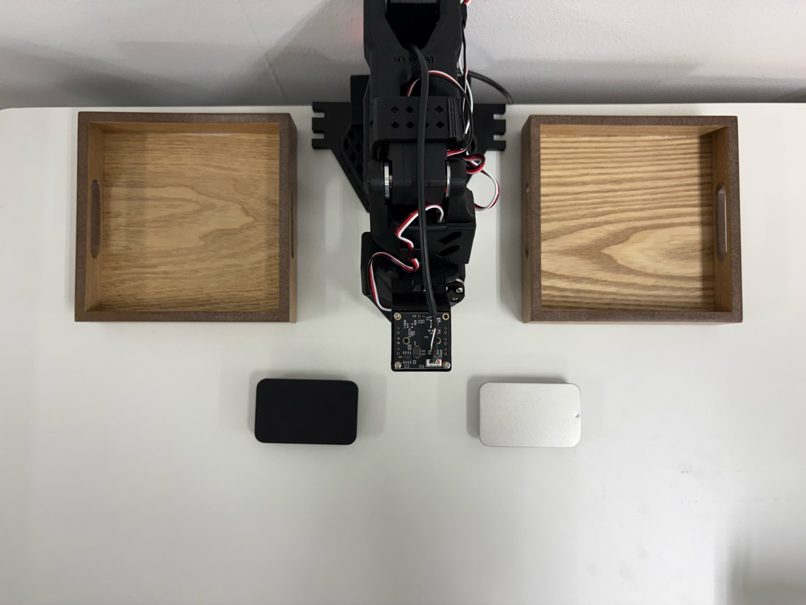
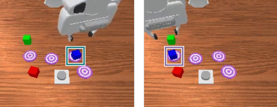
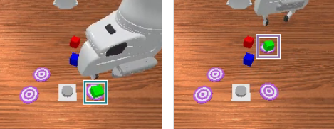
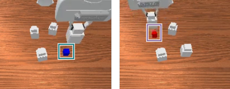
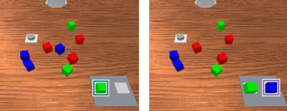

Case preparation and return
Select two closed cases by their contents, then return the USB case to the position seen earlier.
- USB to left tray
- SD to right tray
- Return USB case
Chung-Ang University
The robot records what it sees before the goal is known, then draws on the same record to act on different requests as the scene changes.


The cases are closed and moved. Their contents and original positions are only visible in the earlier record.
Two SO101 scenarios show different ways to reuse a record through three consecutive requests.
Select two closed cases by their contents, then return the USB case to the position seen earlier.

Use the toy’s original position to select it, brush the spot it has vacated, and put it back.
In each scenario, all three independent requests succeeded on 14 of 20 recordings. All three requests succeeded without a reset in 13 of 20 sequences.
Each pair of goals draws on the same observation history. The paper previews show Goal 1 on the left and Goal 2 on the right.

Use the last placement before the button press or the first one after it.

Return the cube to its first or second distinct position in the recording.

Track identity through a cover swap, then uncover the requested blue or red object.

Move the first or second highlighted object after the cues disappear.
A single memory bank serves each new request. The policy combines the retrieved evidence with the current scene to decide what to do next.

+24.5 ppAll-goal success over Uniform-Memory
| Method | All-goal | Sequence |
|---|---|---|
| Uniform-Memory | 36.0% | 35.0% |
| ReuseMem | 60.5% | 58.0% |
All-goal requires success on both requests in separate runs with the same starting scene and memory. Sequence tests both requests in one run without a reset.

At 2,048 entries, feature sharing cuts retained memory from 66.38 to 43.98 MiB. A new request takes 175 ms from receipt to first dispatched command on an RTX 5090. Measurement details ↗
@misc{kang2026reusemem,
title = {ReuseMem: One Memory, Multiple Goals in Robot Manipulation},
author = {Yoonseok Kang and Dayeon Jung and Seunghoon Jeon and
Wonjib Kim and Dongchul Park},
year = {2026},
eprint = {2611.21115},
archivePrefix = {arXiv},
primaryClass = {cs.RO},
url = {https://arxiv.org/abs/2611.21115}
}